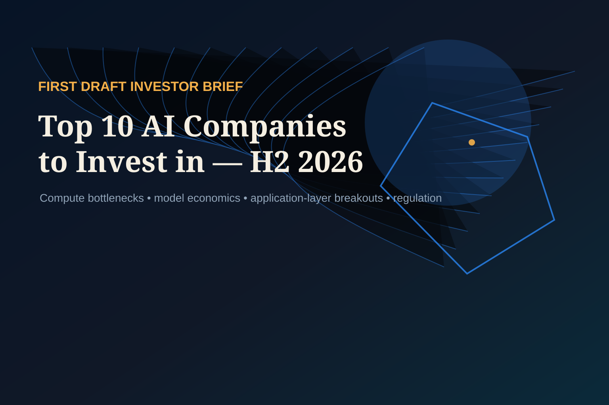
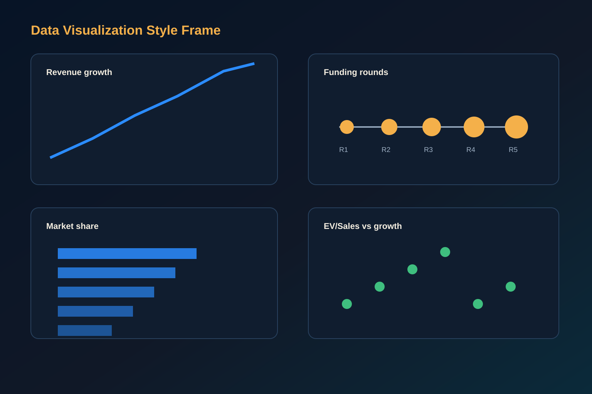
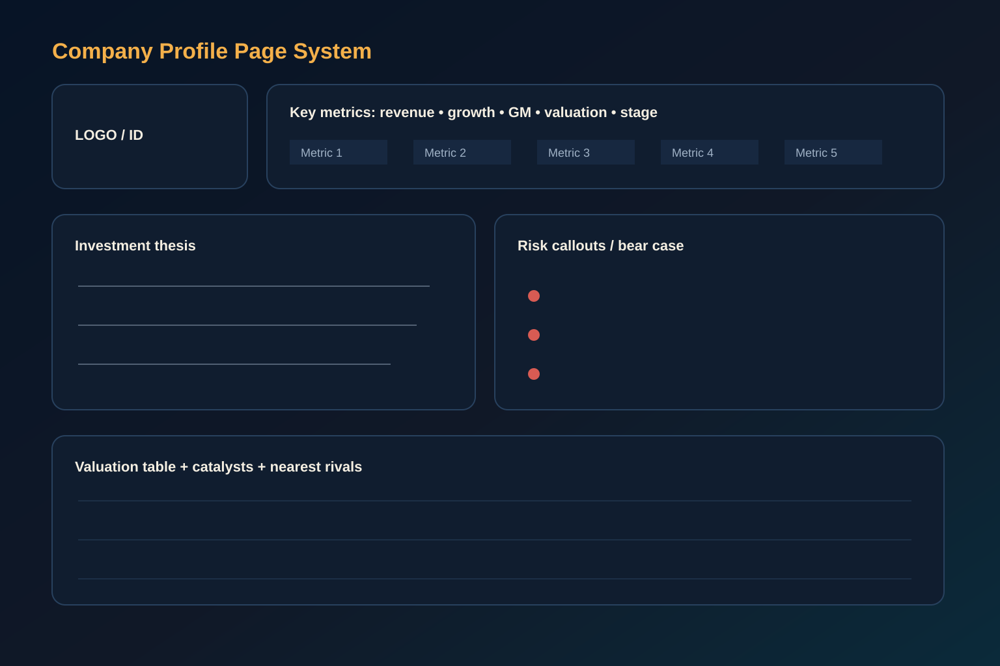
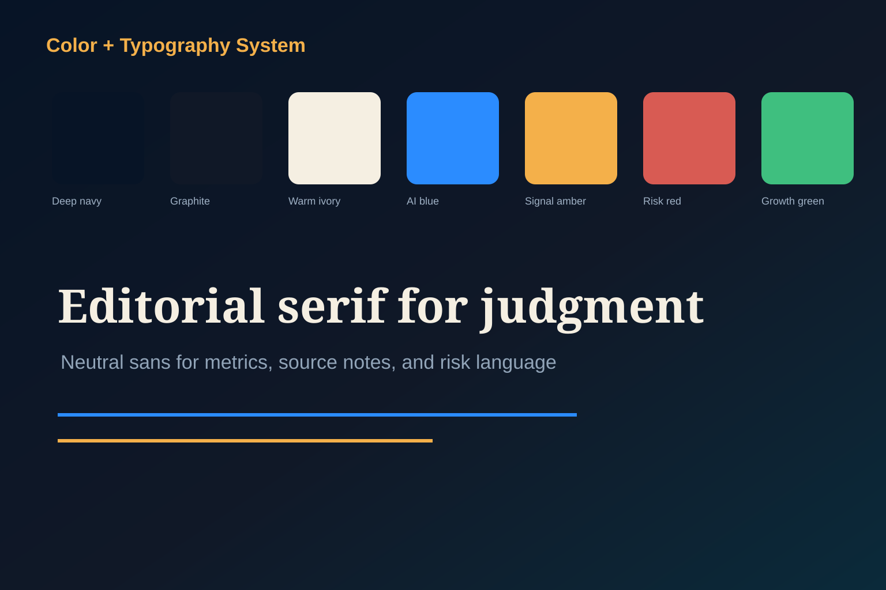

Top 10 AI Companies to Invest in — H2 2026
A sober, citation-forward static brief ranking public and late-stage private AI exposure by revenue quality, moat durability, valuation discipline, H2 2026 catalyst density, and downside protection. This is not investment advice.
Watch the AI dashboard come alive
A 15-second HyperFrames promo loop shows cartoon market mascots, AI signals, ticker filters, range controls, and the heatmap workflow behind this H2 2026 investment brief.
Design assets included
Four visual assets are included and used in this page: cover/hero, company-profile layout mockup, data-visualization style frame, and color/typography board.
Direct image generation was attempted; the configured environment lacked image-generation credentials and no GUI computer-use tool was exposed for ChatGPT app operation. The deliverable therefore uses locally crafted SVG/HTML-generated assets in assets/generated/.
Live market dashboard — ticker filters, ranges, latest news
Interactive market module added for the public AI equities and ETF sleeve. Prices and headlines are fetched into a static JSON snapshot during deployment; use issuer pages or a market terminal before trading.
Companies + ETF sleeve
NVIDIA
Normalized price change
Google News RSS snapshot
NVDA performance
Market heatmap
Ticker snapshot
| Ticker | Last | 1Y |
|---|
Latest AI market news
1. Executive summary
Public names provide liquidity and audited disclosure; private frontier labs provide scarce upside but require liquidity and governance discounts.
The best H2 2026 AI investments monetize bottlenecks in accelerators, advanced manufacturing, enterprise distribution, and proprietary workflow data.
The bear market in AI begins if hyperscaler capex, model pricing, and enterprise adoption fail to translate into durable gross profit.
The ranked list is: NVIDIA, Microsoft, Alphabet, TSMC, Amazon, Broadcom, ASML, Meta, OpenAI, Anthropic. We distinguish public picks from private picks. We exclude AMD, Oracle, ServiceNow, Palantir, Databricks, CoreWeave, xAI, Mistral and Scale AI from the top ten because they score lower on one or more of: revenue quality, moat control, valuation discipline, customer concentration, or liquidity.
2. Macro thesis for AI investing in H2 2026
From training scarcity to inference economics
The market is moving from a single question — who has enough GPUs? — to a harder question: who can run high-volume inference profitably while controlling distribution, data, power, and model quality. This shift favors full-stack platforms and semiconductor bottlenecks, not thin application wrappers.
Semiconductor bottlenecks remain investable
Advanced accelerators, HBM, high-speed networking, advanced packaging, EUV lithography and leading-edge foundry capacity are still the economic choke points. NVIDIA, TSMC, Broadcom and ASML rank highly because they can monetize system-wide scarcity.
Platform distribution matters more as models converge
As frontier model performance converges, enterprise identity, cloud credits, developer tooling, office workflows, consumer surfaces, and proprietary data loops become larger advantages. Microsoft, Alphabet, Amazon and Meta are scored accordingly.
Regulation is an underwriting variable
EU AI Act implementation, US export controls, copyright litigation, antitrust remedies, data residency, power permitting and Taiwan risk can move multiples as much as product launches.

3. Weighted scorecard
Weights: quality of revenue 30%, moat durability 25%, valuation vs. comps 20%, H2 2026 catalyst density 15%, downside protection 10%. Scores are 1–10 investment-committee judgments anchored in the cited data below.
| Rank | Company | Stage | Revenue quality | Moat | Valuation | Catalysts | Downside | Weighted |
|---|
4. Company profiles

5. Portfolio construction suggestion
| Bucket | Suggested weight | Names | Rationale |
|---|---|---|---|
| Infrastructure core | 36% | NVIDIA 12%, TSMC 8%, Broadcom 7%, ASML 5%, Amazon infra tilt 4% | Owns the highest-confidence monetization points: accelerators, foundry, networking/custom silicon, lithography and cloud deployment. |
| Platform distribution | 34% | Microsoft 12%, Alphabet 10%, Amazon 6%, Meta 6% | Balances enterprise and consumer distribution with existing cash flow and AI product surfaces. |
| Private frontier labs | 20% | OpenAI 12%, Anthropic 8% | Access only through negotiated private exposure; require valuation, governance and liquidity haircuts. |
| Hedges and liquidity reserve | 10% | Cash/T-bills, SOX/Nasdaq downside hedges, Taiwan/geopolitical hedge budget | Protects against export-control shock, Taiwan escalation, power/permitting delays, or an AI capex pause. |
6. ETF implementation sleeve — web, Reddit, and X scan
Added after a supplemental scan of issuer pages, web search snippets, Reddit ETF/investing threads, and attempted X search. X was not reliably accessible: the local xurl CLI was unavailable/unauthenticated and browser X search redirected to login/error, so X is treated as an attempted-but-not-scored channel rather than evidence.
| Rank | ETF | Role in AI portfolio | Fee / structure | Why it screens well | Main risk |
|---|---|---|---|---|---|
| 1 | SMH VanEck Semiconductor ETF | Highest-conviction public AI infrastructure beta | Issuer/index semiconductor ETF; commonly cited net expense ratio ≈0.35% [S21]. | Most direct ETF wrapper for the accelerator/foundry/networking bottleneck thesis; web and Reddit discussions repeatedly center SMH as the simple AI-semiconductor choice [S28][S29]. | Top-heavy exposure to NVIDIA/TSMC/Broadcom; excellent if AI capex continues, painful if the semi cycle digests. |
| 2 | SOXX iShares Semiconductor ETF | Diversified semiconductor core | Expense ratio ≈0.34% in web fund-data snippets [S22]. | Better diversified than SMH for investors worried about single-name concentration; Reddit comments explicitly prefer SOXX when NVIDIA/TSMC weights feel too high [S28]. | Still cyclically exposed; can lag SMH in NVIDIA-led rallies. |
| 3 | SOXQ Invesco PHLX Semiconductor ETF | Low-cost semiconductor substitute | Expense ratio ≈0.19% in web fund-data snippets [S23]. | Useful for fee-sensitive AI semi exposure; Reddit ETF discussions specifically call out SOXQ as a lower-expense alternative [S29]. | Less institutional liquidity/mindshare than SMH/SOXX; still top-heavy semis. |
| 4 | VGT Vanguard Information Technology ETF | Broad profitable AI/platform exposure | Expense ratio ≈0.09% in Vanguard/web fund data [S27]. | Low-cost exposure to Microsoft, Apple, NVIDIA, Broadcom and software infrastructure; fits investors who want AI winners without pure thematic ETF fees. | Not a pure AI fund; excludes some communication-services and consumer internet AI names. |
| 5 | QQQM Nasdaq-100 ETF | Broad mega-cap AI and growth sleeve | Lower-cost Nasdaq-100 implementation; broad growth wrapper [S30]. | Captures Microsoft, NVIDIA, Alphabet, Amazon, Meta and other AI beneficiaries while reducing single-theme fund risk; Reddit/investing discussions often push investors back toward broad-market or Nasdaq exposure [S31]. | Market-cap weighted mega-cap concentration; not targeted enough for a high-conviction AI infrastructure view. |
| 6 | AIQ Global X Artificial Intelligence & Technology ETF | Thematic AI satellite | Global X AI/thematic index ETF; expense commonly shown around 0.68% [S24]. | Cleaner thematic AI label than VGT/QQQM and broader than robotics-only funds; useful as a small satellite when the mandate requires explicit AI ETF exposure. | Higher fee and looser theme purity; may own software names not yet converting AI into margin. |
| 7 | BOTZ Global X Robotics & Artificial Intelligence ETF | Robotics/automation satellite | Global X robotics/AI ETF; expense commonly shown around 0.68% [S25]. | Complements data-center AI with industrial automation, robotics and embodied-AI exposure. | More cyclical/industrial and less direct to foundation-model economics; thematic fee drag. |
| 8 | CHAT / THNQ | Small tactical generative-AI / pure-play basket | CHAT expense ≈0.75%; THNQ expense ≈0.68% in web fund-data snippets [S26]. | Use only when the portfolio explicitly wants a high-beta thematic sleeve around generative AI, AI software and model/application beneficiaries. | Highest theme/valuation risk; easier to overpay for narrative than cash-flow conversion. |
ETF model sleeve
Core version: 40% SMH or SOXX, 20% SOXQ/VGT, 20% QQQM, 10% AIQ, 5% BOTZ, 5% cash/hedge budget. This keeps the ETF sleeve infrastructure-led rather than theme-led.
Reddit signal
Reddit ETF/investing threads favor SMH for performance and SOXX/SOXQ for concentration/fee control; Bogleheads-style comments generally argue that VT/VOO/VTI/QQQM already own public AI winners and warn against chasing narrow themes [S28][S29][S31].
Investment-committee take
The best ETFs for this report are not the highest-fee funds with “AI” in the name. For H2 2026, use semiconductor ETFs for direct bottleneck exposure, broad tech/Nasdaq ETFs for profitable platform exposure, and thematic AI ETFs only as capped satellites.
7. What would change our mind — kill criteria for each pick
| Company | Kill criteria |
|---|
8. Appendix: data sources, methodology, conflicts disclosure
Methodology
Screening universe included public AI infrastructure/platform companies and late-stage private frontier-model companies. Each final company was scored against the weighted scorecard. Public data uses company filings, SEC XBRL, investor relations and Nasdaq quote summaries. Private data uses company announcements and major financial press; undisclosed figures are not interpolated.
Staleness flag: any reliable quantitative data older than 2026-01-01 is marked in the profile or source note. For private companies, many funding and ARR data points are press-reported and unaudited.
Conflicts disclosure
No personal holdings, compensation, or banking relationships were assessed in this automated first draft. The brief should be independently verified before committee use.
